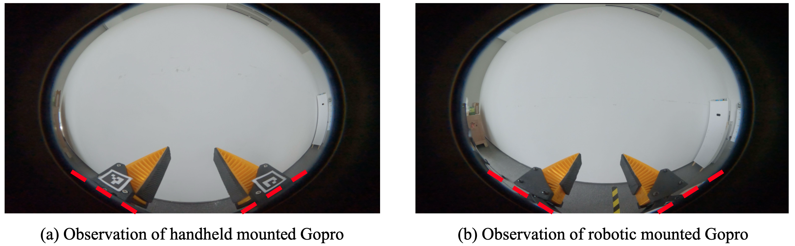
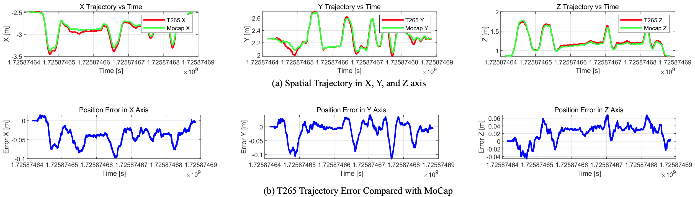

Fast-UMI
A Scalable and Hardware-Independent Universal Manipulation Interface
† * Equal contribution, ‡ Project Leader
1 Shanghai AI Lab
2 Xi'an Jiaotong-Liverpool University
3 Northwestern Polytechnical University
4 Institute of AI, China Telecom Corp Ltd
Physical prototypes of Fast-UMI system

Project Overview
Collecting real-world manipulation trajectory data involving robotic arms is essential for developing general-purpose action policies in robotic manipulation, yet such data remains scarce. Existing methods face limitations such as high costs, labor intensity, hardware dependencies, and complex setup requirements involving SLAM algorithms. In this work, we introduce Fast-UMI, an interface-mediated manipulation system comprising two key components: a handheld device operated by humans for data collection and a robot-mounted device used during policy inference. Our approach employs a decoupled design compatible with a wide range of grippers while maintaining consistent observation perspectives, allowing models trained on handheld-collected data to be directly applied to real robots. By directly obtaining the end-effector pose using existing commercial hardware products, we eliminate the need for complex SLAM deployment and calibration, streamlining data processing. Fast-UMI provides supporting software tools for efficient robot learning data collection and conversion, facilitating rapid, plug-and-play functionality. This system offers an efficient and user-friendly tool for robotic learning data acquisition.
Demos
A naive ACT algorithm is employed here to demonstrate the effectiveness of the 10K training samples we collected, as well as the overall performance of our data collection system.
Note: The performance of the robot in the video is related to our adopted ACT algorithm, and has no connection to our FastUMI system.
Demo4: Rearrange coke (ACT is used here).
Newly Designed Components

Visual Alignment and Consistency
To ensure visual consistency between the handheld and robot-mounted devices, we established a visual alignment guideline: the bottom of the GoPro's fisheye lens image aligns with the bottom of the gripper's fingertips.Note: after trials, we found the marker wasn’t always fully recognized due to distortion. The new version uses a smaller, more centered marker design.

RealSense T265 trajectory accuracy
The T265 trajectory demonstrates an average positional error of 0.0237 m. While the T265 sensor provides reasonably accurate pose estimation suitable for many robotic manipulation tasks, inherent biases and variances exist that should be accounted for in precision-critical applications.Note: After extensive data collection, we discovered several tricks to optimize T265 accuracy. In the new version, SLAM error is much lower than 2 cm by using a more detailed background, carefully managing speed and acceleration during collection, and other refinements.

(a) Spatial trajectories along three axes: T265 measurements (red lines) and MoCap ground truth (green lines). (b) Positional errors of the T265 sensor relative to MoCap along the three axes.
Fast-UMI 3D Model Display
Prototype
Top Cover
Gopro Extension Arm
Fingertip for XArm
Gopro Robotic Mount
Mask Piece
T265 Mount V2